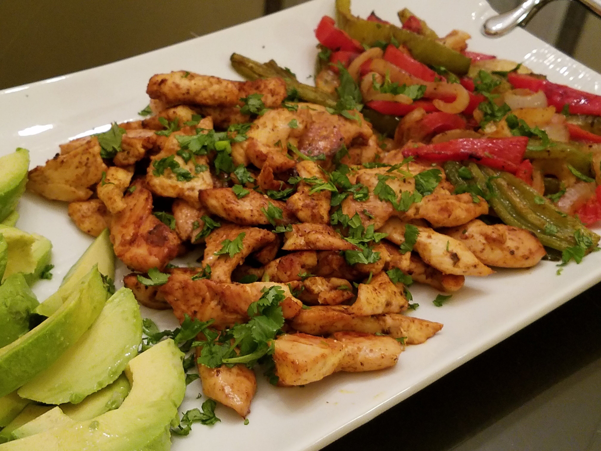

Sheet Pan Chicken Fajitas

Description
Quick and easy way to prepare homemade, flavorful fajitas for a crowd!
Ingredients
- Third cup vegetable oil
- 2 teaspoons chili powder
- 1 teaspoon dried oregano
- Half teaspoon garlic powder
- Half teaspoon onion powder
- Half teaspoon ground cumin
- Half teaspoon salt
- Quarter teaspoon ground black pepper
- 1 and Half pounds chicken tenders, quartered
- 4 cups bell peppers, sliced
- 1 onion, sliced
- Quarter cup fresh cilantro, chopped
- Half lime, juiced
Steps
- Combine vegetable oil, chili powder, oregano, garlic, onion, cumin, salt, pepper, and cayenne pepper in a large resealable plastic bag. Add chicken tenders, bell peppers, and onion; shake to mix.
- Marinate chicken mixture in the refrigerator, 30 minutes to 2 hours.
- Preheat oven to 400 degrees F (200 degrees C). Line a rimmed sheet pan with aluminum foil.
- Spread chicken mixture onto prepared pan.
- Place skillet under the hot broil and cook until cheese is golden and bubbly, 3 to 5 minutes.
- Roast in the preheated oven, stirring halfway through, until chicken is no longer pink and bell peppers soften, 15 to 20 minutes.
- Sprinkle cilantro and pour lime juice over chicken mixture; toss to distribute.
Return Home